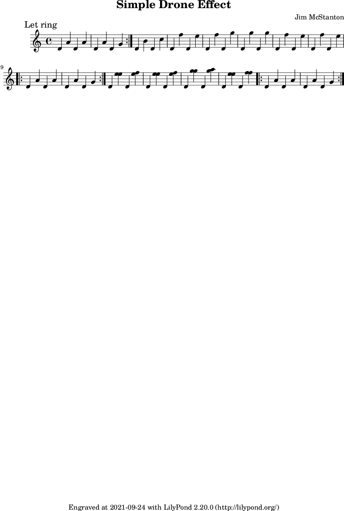

A small droning guitar effect. The approach is to play the low note on its own string and let it ring throughout the piece, and play the majority of the remaining notes on the next, higher string. Once the double stops are involved play them using the next highest string and allow it to ring as long as possible as well.
Note: the midi playback will not include the repeats.
